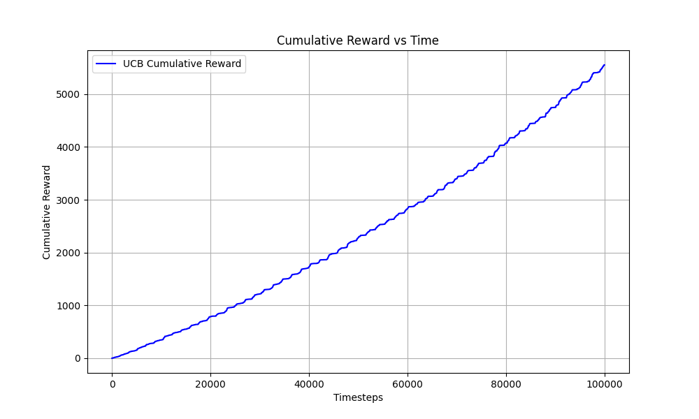
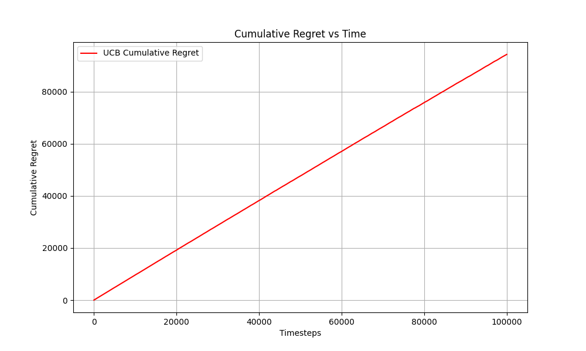
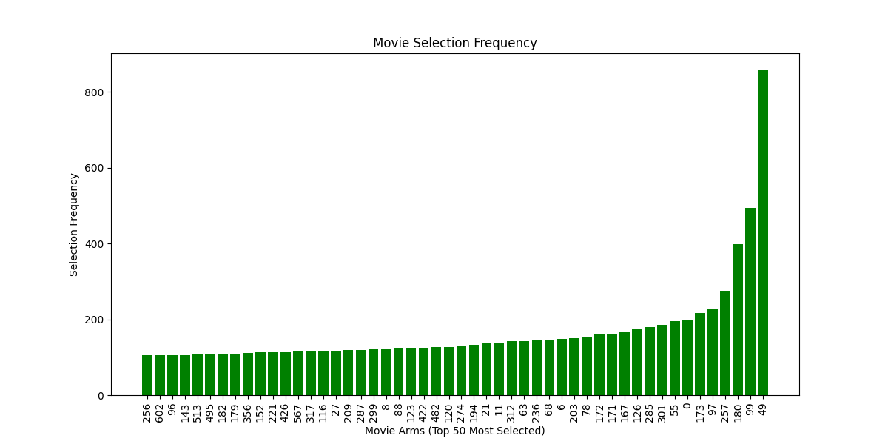

Project Title: Movie Recommendation System using UCB Optimization
Section 1: Project Overview
This project uses the Multi-Armed Bandit framework with the Upper Confidence Bound (UCB) strategy to recommend movies. The algorithm balances exploring less-known movies with exploiting highly-rated favorites.
Section 2: Dataset Explanation
The system leverages the **MovieLens 100K dataset** by GroupLens Research. It contains 100,000 ratings from 943 users across 1,682 movies. During preprocessing, ratings ≥ 4 were assigned a reward of 1, and ratings < 4 were assigned a reward of 0.
Section 3: Algorithm Explanation
The UCB formula tracks average reward and explores actions sequentially:
UCB(a) = Q(a) + √((2 * ln(t)) / N(a))
Where Q(a) is the average reward, t is the timestep, and N(a) is the total number of recommendations for movie a.
Section 4: Results and Graphs
Total Recommendations Simulated: 100000
Total Cumulative Reward: 5553.00
Average Target Reward Rate: 0.0555
Cumulative Reward vs. Time

Regret Curve vs. Time

Movie Recommendation Frequency

Section 5: Top Recommended Movies
- Star Wars (1977) (ID: 50) - Selected 859.0 times, Avg Reward: 0.5076
- Fargo (1996) (ID: 100) - Selected 494.0 times, Avg Reward: 0.4555
- Return of the Jedi (1983) (ID: 181) - Selected 399.0 times, Avg Reward: 0.4311
- Contact (1997) (ID: 258) - Selected 275.0 times, Avg Reward: 0.3818
- Silence of the Lambs, The (1991) (ID: 98) - Selected 229.0 times, Avg Reward: 0.3537
- Raiders of the Lost Ark (1981) (ID: 174) - Selected 217.0 times, Avg Reward: 0.3456
- Toy Story (1995) (ID: 1) - Selected 197.0 times, Avg Reward: 0.3299
- Pulp Fiction (1994) (ID: 56) - Selected 195.0 times, Avg Reward: 0.3282
- L.A. Confidential (1997) (ID: 302) - Selected 185.0 times, Avg Reward: 0.3189
- English Patient, The (1996) (ID: 286) - Selected 179.0 times, Avg Reward: 0.3128